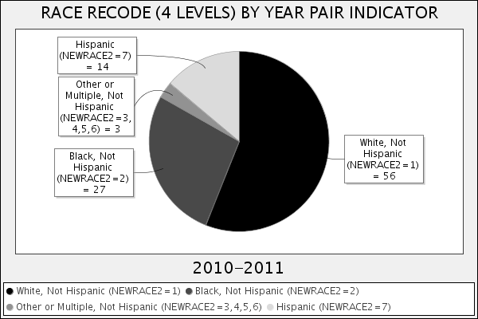
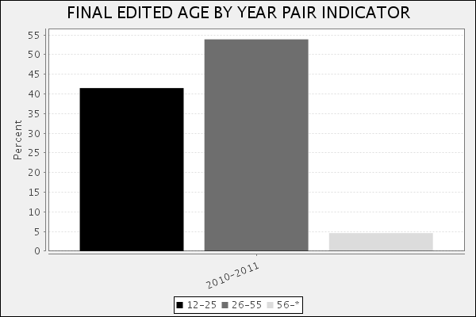
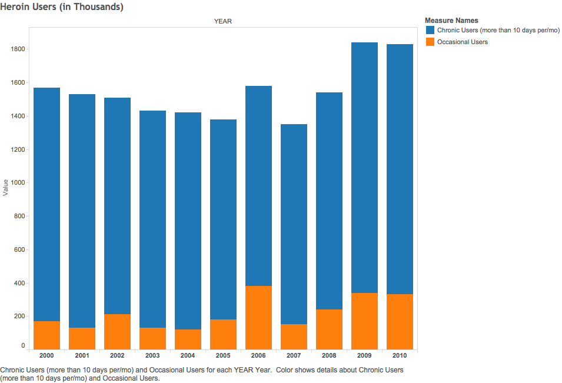
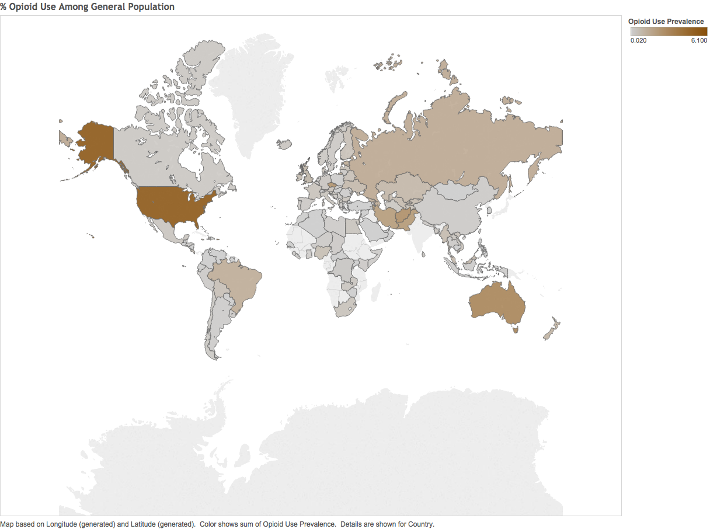
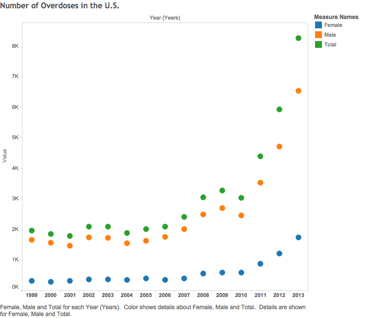
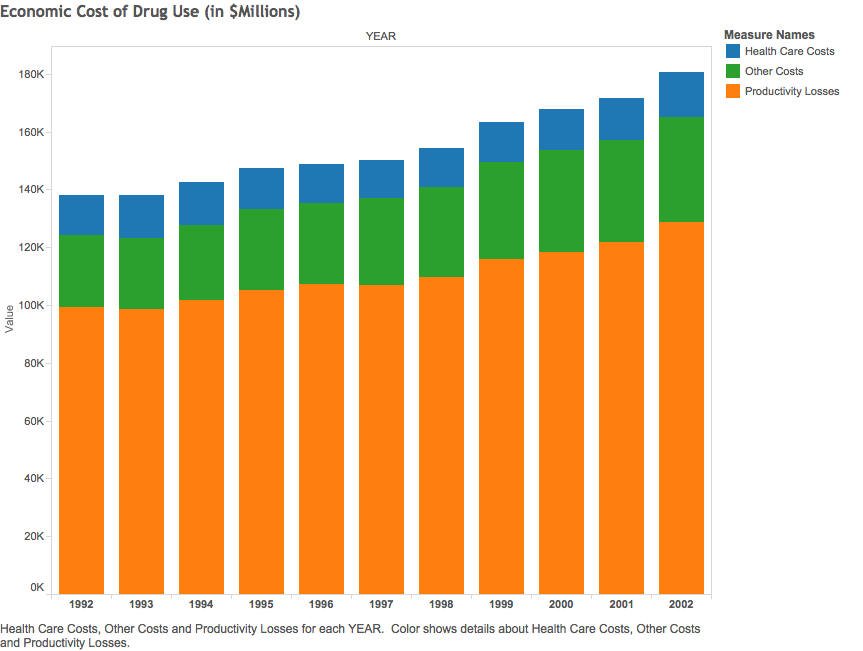

Project Overview
Project 2 will visualize data relating to the chemical diacetylmorphine, more commonly known as "heroin." The project aims to divulge trends in consumption, demographics of use, geographic trends (with focus on the U.S.), death toll and other relevant data. The idea is to give the audience an article that they can read in 10-15 minutes and have a good understanding of the issue at hand.
Style
Due to the nature its subject matter, this project strives for seriousness. Stylistic components will be restained for the most part, though creative flair may emerge where necessary. Graphical components will focus on function rather than form. The style should tell a story accurately while presenting data in a meaningful, comprehensible format.
Client
The client would ideally be an NGO. Some that come to mind are:
- SAMHSA (Substance Abuse and Mental Health Services Administration)
- CDC (Center for Disease Control)
- NIDA (National Institute on Drug Abuse)
- BJS (Bureau of Justice Statistics)
- UNODC (United Nations Office on Drugs and Crime)
These will also serve as key data sources as they publish major reports regarding crime, drug abuse, and mental health issues.
The graphic is intended to present readers with educational information that reveals the devastating societal damage caused by the production and consumption of heroin.
Format
This story will exist as a webpage with charts, maps, and possibly interactive components (depending on availability of data).
Core Components
This section represents the key elements that will comprise the project. This is intended serve as a schematic for what data will be visualized, and the general composition of the project
What is Heroin?
A brief narrative that explains the drug in question. Mechanism of action will be covered briefly.
Who uses Heroin?
Demographic data such as race and age will be included. Below is an example of the kind of data that can be retrieved through SAMHSA's R-DAS (Restricted-Use Data Analysis System). This will be stylized; it is only shown for prototyping purposes. The data is from the years 2010-2011 (most recent published by SAMHSA) and is for the U.S. population.
Demographics:


Users by Frequency:

Consumption, Production, and Transportation
This section will contain key statistics and information that illustrates the volume of the heroin market. Much of this information is available from a report published by the UNODC.
Prevalence of Opioid (Heroin and Painkiller) Use:

Consequences and Costs
This section will detail death tolls, overdoses and other societal harm done by heroin.
Overdoses:

Economic Cost: (All Drugs; not just Heroin)
